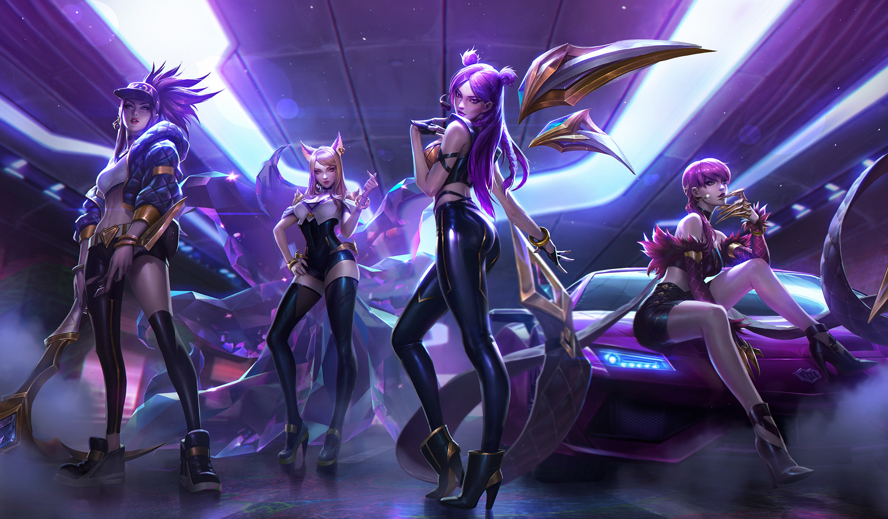

A B O U T U S
K/DA is a virtual girl group consisting of four themed versions of League of Legends characters: Ahri, Akali, Evelynn and Kai'Sa. American singers Madison Beer and Jaira Burns and (G)I-dle members Miyeon and Soyeon provide the voices of Evelynn, Kai'Sa, Ahri, and Akali respectively, though Evelynn and Kai'Sa have also been voiced by other artists. K/DA was developed by Riot Games, the company behind League of Legends, and unveiled at the 2018 League of Legends World Championship with an augmented reality live performance of their first song, "Pop/Stars". A music video of the song uploaded to YouTube subsequently went viral, surpassing 100 million views in one month, and reaching over 300 million views, as well as topping Billboard's World Digital Song Sales chart. This would be followed up with the release of a promotional single in August 2020, entitled "The Baddest"
Click here to find out more!M E M B E R S

A H R I
As the leader, founder, and main vocalist of K/DA, Ahri graces the stage with confident charm. The calm center of the group, she values authentic self-expression and encourages her team to do the same. Ahri takes pride in discovering new talents and shaping them towards their full potential.

A K A L I
Akali is the main rapper of the group, boasting street punk style with a brash, dangerous streak. She constantly keeps her team on their toes—and values her creative independence most of all. Akali’s always spinning on new projects and refuses to compromise for her art.

E V E L Y N N
Evelynn is K/DA’s lead vocalist, wielding a hypnotic stage presence like no other. Never one to stay in the shadows, she relishes the crowd’s reactions to her masterfully crafted image. Co-founder of K/DA alongside her counterpart Ahri, Evelynn edges the group towards their most thrilling creative risks.

K A I S A
As the main dancer and team choreographer, Kai'Sa strives for perfection. Her intense, quiet focus pushes the team forward with otherworldly concepts and pristine attention to detail. Kai'Sa embraces a cosmopolitan approach to life, finding inspiration in every corner of the world.